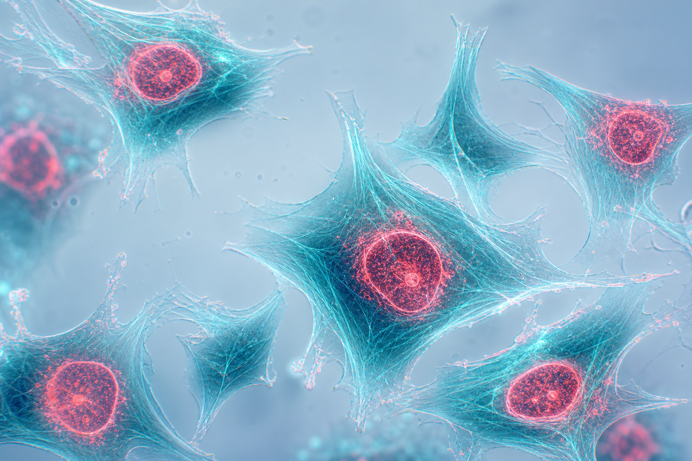

Immunofluorescence Assay Lab Toolkit
Timing Precision That Protects Your Signal
A step-timed workflow tracker that reduces protocol drift in multi-step immunofluorescence assays.

Cyan — cytoskeletal signal
Coral — nuclear / membrane signal
01
The Problem
IF assays fail quietly when incubation times drift.
- Fixation, permeabilization, blocking, and antibody steps stack into a long, interruptible workflow.
- Phone timers and sticky notes do not show which step is active across parallel samples.
- Over- or under-incubation weakens specificity and makes results harder to compare across days.
02
The Approach
One visible tracker for the whole assay story.
- Step-locked countdown for each protocol stage.
- Live clock + start stamp so lab partners can see status at a glance.
- Browser-based — no install, works at the bench between incubations.
Design goal: make timing as visible as the fluorescence itself.
03
Protocol Flow
Five timed stages, one continuous path judges can follow in seconds.
- 10 min Fix 100% methanol
- 10 min Permeabilize 0.2% Triton X-100
- 30 min Block 1% PBS–BSA
- 60 min Primary Ab Target binding
- 60 min Secondary Ab Fluorophore label
04
Why It Works
Judges can score clarity, utility, and reproducibility fast.
5
Timed stages in one view
0
Install steps to start
1
Shared status for the bench
- Reduces missed transitions between long incubations.
- Creates a repeatable rhythm for training new lab members.
- Supports cleaner side-by-side comparison of stained samples.
05
Key Takeaway
Better immunofluorescence starts with better timing discipline — not just better antibodies.
Open the tracker → run the five steps → protect signal quality from the first methanol fix to the final secondary incubation.
Launch Assay Timer
Demo live during your poster session